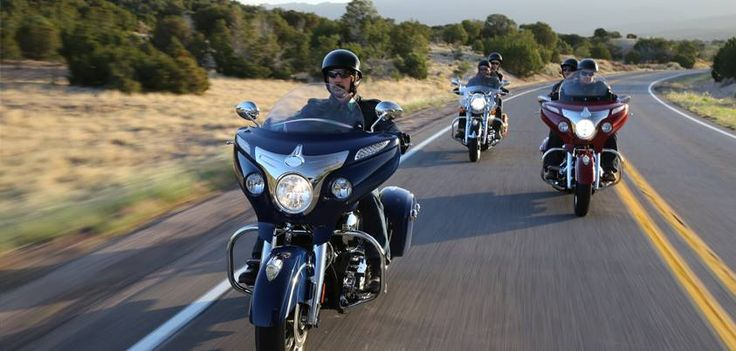

Nosotros
Somos una empresa fundada el 22 de abril de 1980 dedicada a la compra y venta de una gran variedad de motocicletas y de accesorios para ello lo cual facilite el uso y asimismo satisfacer las necesidades del cliente.
Somos una empresa fundada el 22 de abril de 1980 dedicada a la compra y venta de una gran variedad de motocicletas y de accesorios para ello lo cual facilite el uso y asimismo satisfacer las necesidades del cliente.
Contamos con una gran variedad de motocicletas desde las que se pueden utilizar para trabajar hasta las que suelen ser solamente de uso común.

Se tiene una amplia gama de accesorios con los cuales puedes acompañar y tunear tu moto para mejorar su estilo.
Para todas aquellas personas que viven en diferentes lugares del pais se cuenta con distintas tiendas a las cuales puedes acudir para obtener lo que se necesite.